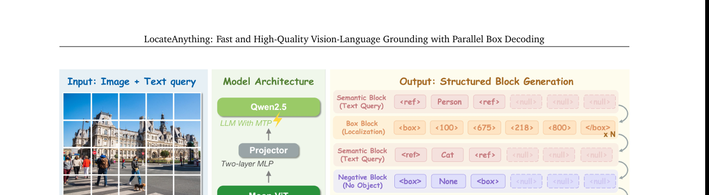
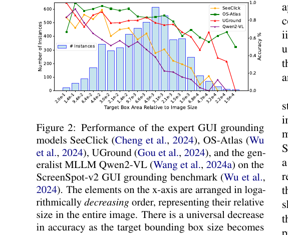
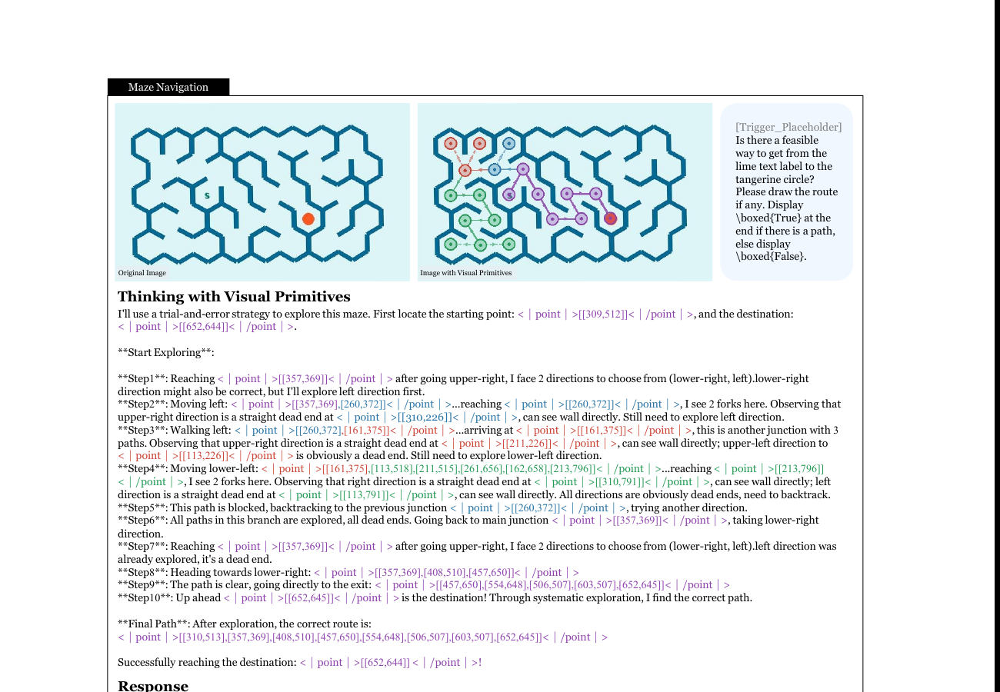

VLM Grounding 全景(2025–2026):从「框是输出」到「框是思维」
Grounding(视觉定位)——让一个能看图、能读字的模型把语言里的指代精确锚到图像里的具体位置(框 / 点 / 掩码 / 多边形)——是 2025–2026 多模态大模型最热的战场之一。它既是 computer-use agent、机器人、GUI 自动化的底层原语,也是 thinking-with-images 这条新推理范式的关键支点。
本教程从你已经熟悉的两篇工作出发——Thinking with Visual Primitives(把 bbox 当作"思维原语"穿插进推理链)与 LocateAnything(把 bbox 当作"原子输出"并行解码)——横向铺开整个领域:9 个螺旋结构章节,每节走「直觉 → 最小 demo → 正式化 → 真实代码引用 → 洞察」五步。主线是一条清晰的范式迁移:从「框是输出」(§3–§5)到「框是思维」(§6),中间穿插坐标 token 化(§2)、高分辨率感知(§7)、评测盘点(§8)与数据工程(§9)。代码 verbatim 引自 IDEA-Research/Rex-Omni(坐标量化的教科书级实现)与 QwenLM/Qwen2.5-VL(production 级 grounding)。文末附分类参考文献与技术报告全集。
阅读提示:每节可独立跳读;关键符号在每节首次出现都会带一句话解释。带 ★ 的 §2(坐标 token 化)与 §8(benchmark 盘点)是全篇的两根支柱。
1. 全景:什么是 VLM grounding,以及两道 gap
1.1 直觉
想象你和朋友站在超市货架前,你说"帮我拿那个红色的",同时用手指指着最上层那一罐。你的话("红色的")是模糊的——货架上红色东西不止一个——但你的手指把这句话钉到了一个确切的位置。VLM grounding(视觉定位)做的就是这件事:让一个能看图、能读字的模型(Vision-Language Model,视觉语言模型),在收到一张图片和一句自然语言后,指出图里到底是哪个东西、在哪个位置。区别只在于,模型的"手指"不是肉做的,而是一个框、一个点、或一片轮廓。
所以一句话:grounding = 把"语言里的指代"映射到"图像里的具体位置"。它是"看懂"之外多走的一步——不仅知道图里有什么,还能精确说出"就是那儿"。下面的 teaser 图(图 1)展示了一个更进阶的版本:模型在推理过程中,把点和框穿插进自己的思考链里,边想边指。

1.2 最小 demo
不需要任何深度学习,我们就能体会"指"的本质:给一张 4×4 的格子图和短语 "the red cell",返回它指向的格子坐标与归一化中心点。
grid = [
["white", "blue", "white", "green"],
["white", "white", "red", "white"],
["green", "white", "white", "blue"],
["white", "white", "white", "white"],
]
query = "the red cell"
color = query.split()[1] # "red" —— 从语言里抽出指代线索
for r, row in enumerate(grid): # 在 4x4 空间里搜这个指代
for c, cell in enumerate(row):
if cell == color:
cx = (c + 0.5) / 4 # 归一化中心 x in [0,1]
cy = (r + 0.5) / 4 # 归一化中心 y in [0,1]
print(f"(row,col)=({r},{c}) center=({cx:.3f},{cy:.3f})")
# 输出: (row,col)=(1,2) center=(0.625,0.375)
这十几行就是 grounding 的骨架:从文本里解析出指代 → 在图像空间里定位 → 输出归一化坐标。真实 VLM 只是把"按颜色匹配"换成了上亿参数的视觉-语言对齐,把"4×4 网格"换成了连续图像,但接口是一样的:进去 (图, 文),出来 (位置)。
1.3 正式化
把上面的玩具接口写成一个映射。设 \(I\) 为输入图像,\(t\) 为文本查询,grounding 是函数
—— 翻译: grounding 接收"一张图 + 一句话",吐出一组**指代物**(referent)$r_i$;$k$ 可以是 0(没找到)、1(单目标)或多个(同类多实例)。
每个 referent \(r\) 的形态因任务而异,但都活在归一化坐标系 \([0,1]\) 里(与图像分辨率解耦):
—— 翻译: 同一个"指"的动作,输出可以是矩形框、单点、像素掩码或多边形顶点序列——这就是"grounding 输出谱系"。坐标一律归一化到 $0$ 到 $1$,$x_2\gt x_1$ 且 $y_2\gt y_1$。
许多看似不同的任务,其实都是 \(g\) 的特例,只是 \((t, r)\) 的形态不同:
| 任务 | 文本 \(t\) | 指代 \(r\) 形态 |
|---|---|---|
| REC(指代表达理解) | 一句指代短语,如 "穿红衣的人" | 单个 box |
| OVD(开放词表检测) | 任意类别名 / 词表 | 多个同类 box |
| Pointing | 物体名或属性短语 | 单 point(或多点) |
| GUI grounding | 界面指令,如 "点击提交按钮" | 控件 box 或点击 point |
坐标如何喂进语言模型?现代做法是把 \([0,1]\) 的连续坐标量化成整数 bin,\(b_\text{bin}=\lfloor b_\text{norm}\cdot 999\rceil\),当作离散 token 生成(§2 展开)。
1.4 代码引用
Rex-Omni(arXiv:2510.12798, CVPR 2026)用一行枚举,把上面表格里的所有能力统一在一个 TaskType 下——这正是 \(g\) 的"特例集"在工程上的样子:
sources/repos/IDEA-Research-Rex-Omni/rex_omni/tasks.py:L13-L23 — Rex-Omni 把所有 grounding 能力收敛成一个 TaskType 枚举
class TaskType(Enum):
"""Supported task types"""
DETECTION = "detection"
POINTING = "pointing"
VISUAL_PROMPTING = "visual_prompting"
KEYPOINT = "keypoint"
OCR_BOX = "ocr_box"
OCR_POLYGON = "ocr_polygon"
GUI_DETECTION = "gui_grounding"
GUI_POINTING = "gui_pointing"
对照 §1.3 的 referent 形态:DETECTION/GUI_DETECTION/OCR_BOX 输出的是 box \((x_1,y_1,x_2,y_2)\);POINTING/GUI_POINTING/KEYPOINT 输出 point \((x,y)\);OCR_POLYGON 输出 polygon 顶点序列;VISUAL_PROMPTING 则是把"指代线索"从文本换成框/点(用图当 \(t\))。一份模型权重、一套坐标 token,撑起整张谱系——这就是 grounding 走向统一接口的标志。
1.5 洞察
- grounding 是 agent / robot / computer-use 时代的关键原语。 机械臂要抓取、Agent 要点击,都必须先"指准"——没有精确的 \(r\),后面的动作无从落地。"看懂"只是输入,"指准"才是能驱动世界的输出。
- 瓶颈正从 Perception Gap 转向 Reference Gap。 早期模型"看不清"(小目标、密集场景),这道 Perception Gap 已被高清切图、thinking-with-images 等手段大幅缓解;真正卡住的是 Reference Gap——自然语言对密集空间布局的指代天然模糊("左边第二个"到底是哪个)。这正是 anchor 论文 Thinking with Visual Primitives 的核心论点。
- 本教程主线:从"框是输出"到"框是思维"。 §3–§5 把框当作模型最终吐出的答案(LocateAnything 式的 bbox-as-output);§6 翻转视角,让点 / 框成为推理链里的中间步骤(图 1),用"指"来思考,而非只在结尾"指"。
2. 坐标如何变成 token:三大流派
2.1 直觉
VLM 的"嘴"里只会吐 token——它不会拿起笔在图上画一个框。可它偏偏要告诉你"狗在这儿"。怎么办?把"框"翻译成一串它会说的"词"。
办法是把整张图片想象成一张 1000×1000 的方格纸:横竖各 1000 格,左上角是 (0,0),右下角是 (999,999)。不管原图是 480 还是 4000 像素宽,都先压扁到这张统一的方格纸上。这样一来,一个框就退化成 四个格子编号:左上角落在第几列、第几行,右下角落在第几列、第几行。比如下面 图 2 里那只框,就是 x0=131, y0=270, x1=879, y1=949 这四个数。
模型要做的,就从"画框"变成了"按顺序报四个 [0,999] 之间的整数"——而报整数,正是语言模型最擅长的事。坐标就这样被驯化成了 token。
2.2 最小 demo
def quantize(box_norm, bins=999):
# 归一化框 -> 四个 [0,999] 整数 -> token 串
ids = [max(0, min(bins, round(v * bins))) for v in box_norm]
return "".join(f"<{i}>" for i in ids), ids
def dequantize(ids, bins=999):
# token 整数 -> 还原回 [0,1] 归一化框
return [i / bins for i in ids]
box = [0.13, 0.27, 0.88, 0.95] # 原始归一化框
tok, ids = quantize(box)
back = dequantize(ids)
err = [abs(a - b) for a, b in zip(box, back)]
print("token 串 :", tok) # <130><270><880><950>
print("bin 整数 :", ids)
print("还原归一 :", [round(b, 4) for b in back])
print("量化误差 :", [round(e, 5) for e in err]) # 都 < 1/(2*999) ≈ 0.0005
跑一遍可以看到:四个坐标各自被压进最近的格子,再还原时每个分量的误差都不超过半格(约 0.0005 归一化单位)。这就是离散化坐标的全部代价——一个被半格上界牢牢锁住的误差。
2.3 正式化
设图像宽为 \(W\)(高同理用 \(H\)),绝对像素坐标 \(b_\text{abs}\)。先归一化到 \([0,1]\):
—— 翻译:把"第几个像素"换算成"占整幅图的百分之几",抹掉原图分辨率差异。
再量化成 \([0,999]\) 的整数 bin(\(\lfloor\cdot\rceil\) 表示四舍五入):
—— 翻译:把百分比乘到 0–999 这把"千格尺"上取整,落在哪一格就报哪个编号,越界的钳回端点。
反量化(模型输出 bin 后还原绝对坐标):
—— 翻译:把格子编号当成百分比读回去,再乘回真实宽度,得到预测的像素位置。
量化只丢"半格"信息,误差上界为:
—— 翻译:任何坐标的还原误差都不超过半格对应的像素数;图越大、bin 越少,这个天花板越高。
同一套"框 → token"的翻译,业界长出了 三大流派:
① 纯文本数字串——坐标就是普通数字 token,不新增任何词表。Shikra 直接在自然语言里写出 0.131,0.270,0.879,0.949 这样的数字,模型像背电话号码一样背坐标。
② 特殊定位 token——给坐标专门造词。Kosmos-2 用 markdown-link 形式 [text span](<loc>) 把文字跨度和框绑定;Florence-2 / PaliGemma 则引入 <loc0000>–<loc1023> 这类专用 location token,坐标从此有了独立的 embedding。
③ 量化 bin token vs 绝对坐标 JSON——Rex-Omni 把框量化到 bins 0–999,用整数 token <0>..<999> 表示(正是上面那套公式);而 Qwen2.5-VL 反其道行之,直接在 JSON 里吐 真实像素值 而非 bin,坐标系交给动态分辨率(§7 展开)。
2.4 代码引用
先看 解码(模型已吐出四个 bin,还原成绝对坐标):
sources/repos/IDEA-Research-Rex-Omni/rex_omni/parser.py:L88-L105 — 解码:把 <x0><y0><x1><y1> 四个 [0,999] bin token 还原成绝对坐标
elif len(coord_nums) == 4:
# Bounding box: <{x0}><{y0}><{x1}><{y1}>
try:
x0_bin = int(coord_nums[0])
y0_bin = int(coord_nums[1])
x1_bin = int(coord_nums[2])
y1_bin = int(coord_nums[3])
# Convert from bins [0, 999] to absolute coordinates
x0 = (x0_bin / 999.0) * w
y0 = (y0_bin / 999.0) * h
x1 = (x1_bin / 999.0) * w
y1 = (y1_bin / 999.0) * h
annotations.append({"type": "box", "coords": [x0, y0, x1, y1]})
except (ValueError, IndexError) as e:
print(f"Error parsing box coordinates: {e}")
continue
再看 编码(把绝对坐标喂给模型前,先量化成 bin token 串):
sources/repos/IDEA-Research-Rex-Omni/rex_omni/parser.py:L269-L300 — 编码:绝对坐标 → 归一化 → 量化到 [0,999] bin → 拼成 <bin> token 串
def convert_boxes_to_normalized_bins(
boxes: List[List[float]], ori_width: int, ori_height: int
) -> List[str]:
"""Convert boxes from absolute coordinates to normalized bins (0-999) and map to words."""
word_mapped_boxes = []
for box in boxes:
x0, y0, x1, y1 = box
# Normalize coordinates to [0, 1] range
x0_norm = max(0.0, min(1.0, x0 / ori_width))
x1_norm = max(0.0, min(1.0, x1 / ori_width))
y0_norm = max(0.0, min(1.0, y0 / ori_height))
y1_norm = max(0.0, min(1.0, y1 / ori_height))
# Convert to bins [0, 999]
x0_bin = max(0, min(999, int(x0_norm * 999)))
y0_bin = max(0, min(999, int(y0_norm * 999)))
x1_bin = max(0, min(999, int(x1_norm * 999)))
y1_bin = max(0, min(999, int(y1_norm * 999)))
# Map to words
word_mapped_box = "".join(
[
f"<{x0_bin}>",
f"<{y0_bin}>",
f"<{x1_bin}>",
f"<{y1_bin}>",
]
)
word_mapped_boxes.append(word_mapped_box)
return word_mapped_boxes
对照:编码里的 x0 / ori_width 就是 §2.3 的归一化 \(b_\text{norm}=b_\text{abs}/W\);int(x0_norm * 999) 配上 max(0, min(999, ·)) 正是量化式 \(b_\text{bin}=\mathrm{clip}(\lfloor b_\text{norm}\cdot 999\rceil,0,999)\)(代码用 int() 截断,论文用四舍五入,差半格量级)。解码侧 (x0_bin / 999.0) * w 一字不差地对应反量化 \(\hat b_\text{abs}=(b_\text{bin}/999)\cdot W\)。编码/解码两段把同一组公式做成了对称的一来一回。
2.5 洞察
-
Rex-Omni 为什么用"复用已有词表的整数 token"
<0>..<999>? 它并没有真去新增 1000 个全新 embedding,而是把<131>这种整数串当成已有词表里的普通 token 来用——省去扩词表、初始化新 embedding 的成本,坐标 token 直接搭语言模型的便车,训练时无需冷启动新参数。代价是坐标和普通数字共享语义空间,得靠 SFT(22M)+GRPO 的几何感知 reward 把"离散框框得准"这件事硬训出来。 -
Qwen2.5-VL 的绝对像素坐标:尺度换精度。 直接输出真实像素值,保留了原图的真实尺度和长宽比,不被 1000 格强行压扁——但代价是坐标系死死绑在
smart_resize之后的几何上(§7 详谈)。反观 1000 bins 方案有个精度天花板:\(W/(2\cdot 999)\) 的上界意味着高分辨率图里两个挨得很近的小目标,可能被量化进同一格而无法区分。 -
离散 token vs 连续回归头,是这条线的根本张力。 离散方案(bin token)好训、和 LLM 自回归天然统一,但带着抹不掉的量化误差;连续方案(如 Ferret 用 spatial-aware visual sampler 直接采区域特征)坐标精确,却难和 LLM 的离散词表对齐、解码也更别扭。LocateAnything 的 Parallel Box Decoding(§3)正是在离散框架内做文章——既保留 token 化的训练友好,又把精度和速度抢回来。
3. Grounding 作为输出(一):检测、referring 与并行框解码
3.1 直觉
回到 §1 的 grounding 定义 \(g:(I,t)\to\{r_i\}\):模型要把每个 referent \(r\) 落成一个归一化框 \((x_1,y_1,x_2,y_2)\)。§2 已经讲过坐标怎么 token 化——把 \([0,1]\) 量化成 bin,于是"报一个框"就变成"念四个数",比如 <131><270><879><949>。
问题来了:VLM 默认是自回归(autoregressive)的,它一个 token 一个 token 地往外吐,念完 \(x_1\) 才念 \(y_1\),念完 \(y_1\) 才念 \(x_2\)……四个数被强行排成一条串行队列。可这四个数本来是一个几何整体:左上角和右下角互相约束,知道了 \(x_1,x_2\) 几乎就锁死了框的横向位置。它们更像一张牌的四个角,而不是一句话的四个词——为什么不一口气并行念出来?
这正是 LocateAnything 的 Parallel Box Decoding(PBD,并行框解码):把一个 bbox 当成一个原子块,块内四个坐标互相可见、一步并行解出。下图(图 3.1)是它的架构总览。

3.2 最小 demo
下面这段手写小程序对比两种解码方式的"步数":自回归逐 token 念(步数 = 坐标 token 数),vs 块并行(整框一步)。把它放进脑子里跑一遍,就能感受到加速来自哪里。
TOKENS_PER_BOX = 6 # box_start + x1 y1 x2 y2 + box_end
def ar_steps(n_boxes): # 自回归:每个 token 一步
return n_boxes * TOKENS_PER_BOX
def pbd_steps(n_boxes): # 并行框解码:整块一步出
return n_boxes * 1 # block 内 4 坐标并行,只算 1 步
for n in [1, 5, 20]:
a, p = ar_steps(n), pbd_steps(n)
print(f"{n:>2} 框: 串行 {a:>3} 步, 并行 {p:>2} 步, 加速 {a/p:.0f}x")
# 输出:
# 1 框: 串行 6 步, 并行 1 步, 加速 6x
# 5 框: 串行 30 步, 并行 5 步, 加速 6x
# 20 框: 串行 120 步, 并行 20 步, 加速 6x
直觉是:每框省下的不是"算得更快",而是"少排了几趟队"——把块内人造的顺序依赖压成一步。真实系统里加速比没有这么理想(块边界、回退机制等开销),但量级是对的。
3.3 正式化
(1)NTP 串行基线。 标准 next-token-prediction(NTP)把一个框写成长度 \(L=6\) 的 token 块 \(c_1,\dots,c_6\)(<box_start>、4 个坐标、<box_end>),其联合概率严格自回归分解:
—— 翻译:每个 token 都条件在它前面所有 token 上($c_{\lt i}$ 即第 $i$ 个之前的全部),$L=6$ 个 token 必须排成一条因果链逐个生成,这就是串行 6 步的来源。
(2)Parallel Box Decoding。 PBD 改造注意力掩码:块内双向(block-internal bidirectional)——一个框的 4 个坐标互相可见,联合一步解出;块间因果(cross-block causal)——框与框之间仍保自回归,后面的框看得到前面的框。形式上,块 \(k\) 的整块分布只条件在前序块上:
—— 翻译:整个框 $\text{box}_k$ 作为一个整体被预测,内部 4 坐标不再互相条件、而是并行联合解码;只有"框与框"之间还保留 $\text{box}_{\lt k}$ 的因果依赖,自回归语义没丢。
训练怎么两全。 LocateAnything 把同一个 GT 同时塞成两种格式:NTP 序列 \(x_\text{ntp}\) 和 block 序列 \(x_\text{blk}\),靠 attention mask 让两条 stream 互不串话,联合学 NTP + MTP(multi-token-prediction)两个目标。推理三模式:Fast(纯 MTP,最快)、Slow(纯 NTP,最稳)、Hybrid(默认走 MTP,一旦输出 format 异常或 top-1 概率 \(\lt 0.7\) 就回退 NTP)。这样并行解码出问题时有兜底,精度不塌。
Rex-Omni 的另一条路。 它把检测整个重铸为 next-point-prediction:坐标量化成离散 token(§2),用 SFT(22M)打底,再用 GRPO + geometry-aware reward(几何感知奖励)做 RL 微调——离散 token 化天然把连续坐标切成格子,SFT 难以补回这个"离散→连续"的精度 gap,而 RL 直接用 IoU 一类几何奖励去优化,顺带还压住了重复框(duplicate predictions)。两条路一个改解码并行度、一个改训练目标,但都在跟同一个对手较劲:把序列化的坐标生成做得又快又准。
3.4 代码引用
序列化的 grounding 输出最终要被解析回结构化的 \(\{r_i\}\)。下面是 Rex-Omni 解析器的核心正则,把模型吐出的文本切回"referent + 坐标块"。
sources/repos/IDEA-Research-Rex-Omni/rex_omni/parser.py:L55-L68 — 检测/referring 输出用正则切出每个 object_ref + 其 box_start..box_end 块,再按逗号切多框
# Use regex to find all object references and coordinate pairs
pattern = r"<\|object_ref_start\|>\s*([^<]+?)\s*<\|object_ref_end\|>\s*<\|box_start\|>(.*?)<\|box_end\|>"
matches = re.findall(pattern, text)
for category, coords_text in matches:
category = category.strip()
# Find all coordinate tokens in the format <{number}>
coord_pattern = r"<(\d+)>"
coord_matches = re.findall(coord_pattern, coords_text)
annotations = []
# Split by comma to handle multiple coordinates for the same phrase
coord_strings = coords_text.split(",")
对照看:正则 <\|object_ref_start\|>...([^<]+?)...<\|object_ref_end\|>...<\|box_start\|>(.*?)<\|box_end\|> 的两个捕获组,第一组抓出 referent 文本(如 cat),第二组抓出它对应的整段坐标块——正好对应 §2 给的 Rex-Omni 输出格式。re.findall 一次性拿到图里所有"referent + 坐标块"配对。而 coords_text.split(",") 再把同一个 referent 下的多个同类框(比如三只猫)用逗号切开,逐个还原成一个 \(r_i\)。这就是序列化 grounding 输出被解析回结构化结果的完整链路:正则定位语义边界 → 逗号切分多框 → 每个 <数字> token 反量化回归一化坐标。
3.5 洞察
- 几何耦合该并行,而非串行。 一个框的 4 个角点服从一个联合分布,横纵坐标互相约束;NTP 的 \(c_{\lt i}\) 链却给它们强加了一条人造的顺序依赖(先念 \(x_1\) 才能念 \(y_1\))。PBD 把块内改成双向注意力,等于承认"这四个数是一个整体",顺序本就不该存在——这是建模假设的修正,不只是工程提速。
- 离散→连续 gap 靠 RL 补。 坐标 token 化把连续位置切成 1000 个 bin,SFT 只能学到"落在哪个格子",难以微调到亚像素精度。Rex-Omni 用 GRPO + geometry-aware reward 直接拿几何指标(IoU)当奖励信号,把 SFT 学不到的连续精度从 RL 里捞回来,同时缓解重复预测。
- 并行不是拿精度换速度,而是两者兼得。 LocateAnything-3B 实测:LVIS F1@0.95 达 31.1(Qwen3-VL-8B 仅 20.2,Rex-Omni-3B 20.7),用更小的模型反超;吞吐 12.7 BPS,比 Qwen3-VL-8B 快 12.7×、比 Rex-Omni 快 2.5×。下图(图 3.2)的 teaser 直观传达了这一点:把 bbox 当原子,一次出 4 坐标。

4. Pointing 与计数:点不只是退化的框
4.1 直觉
想象你要数草地上的一群羊。与其给每只羊画一个框,不如用手指着一只一只点过去——点完几下,就是几只。这就是 pointing 的精神:grounding 的输出不一定是框,也可以是一个点 \((x,y)\)。
点对两类任务格外自然。一是计数:框容易在密集、重叠的小目标上互相纠缠,而"点一下算一个"几乎不会数错。二是指向可操作目标:机器人要抓的那个把手、agent 要按的那个按钮、导航要去的那个 waypoint——它们本质上是一个位置,而不是一个范围。AllenAI 的 Molmo 用 native pointing 把这件事做到了开源 VLM 的第一梯队,证明了"点"是一种独立、强大的 grounding 形态,而非"退化的框"。

4.2 最小 demo
判定一个预测点是否"命中"目标,最直接的方式是看它是否落进 GT mask 里;计数则只是数一数点的个数:
def point_in_mask(point, mask):
"""point=(x,y) 归一化 [0,1];mask 为 H×W 的 0/1 二维列表。"""
H, W = len(mask), len(mask[0])
px = min(int(point[0] * W), W - 1) # 反归一化到列索引
py = min(int(point[1] * H), H - 1) # 反归一化到行索引
return mask[py][px] == 1 # 落在前景=命中
mask = [[0, 0, 0],
[0, 1, 1],
[0, 1, 1]]
print(point_in_mask((0.8, 0.8), mask)) # True 命中
print(point_in_mask((0.1, 0.1), mask)) # False 脱靶
points = [(0.8, 0.8), (0.5, 0.6), (0.9, 0.7)]
print("count =", len(points)) # count = 3,计数即点数
4.3 正式化
(1) Pointing 输出。 给定图像 \(I\) 与文本 \(t\),pointing 模型输出一个或多个归一化点
—— 翻译:输出不是 $(x_1,y_1,x_2,y_2)$ 四元组的框,而是一个二维点,坐标已归一化到 $[0,1]$,与 §1 的 bin 量化 $b_\text{bin}=\lfloor b_\text{norm}\cdot999\rceil$ 共用同一坐标约定。
(2) Point-in-mask 评测。 设 GT 二值 mask 为 \(M\in\{0,1\}^{H\times W}\),预测点 \(\hat p=(\hat x,\hat y)\)。命中当且仅当其落入前景:
—— 翻译:把归一化点缩放回像素行列索引,查这个像素是不是目标前景;是就算命中($\mathbb{1}[\cdot]$ 取 1)。
当没有 mask、只有标注点 \(p^\ast\) 时,改用距离阈值:
—— 翻译:预测点与真值点的欧氏距离小于阈值 $\tau$ 即判命中;阈值越小评测越严。
(3) Counting via pointing。 把"数数"归约为"数点":
—— 翻译:模型先逐个点出每个实例,预测数量就等于点集的基数;Molmo 正是靠这种"点着数"显著提升了计数准确率。
4.4 代码引用
Rex-Omni 把 pointing 与 keypoint 都登记为独立任务:pointing 直接输出 \((x,y)\) 点,keypoint 则先框后逐关节点(如 17 关节人体/动物骨架)。
sources/repos/IDEA-Research-Rex-Omni/rex_omni/tasks.py:L48-L72 — Pointing 与 Keypoint 任务:point 输出 (x,y),keypoint 先框后逐关节点
TaskType.POINTING: TaskConfig(
name="Pointing",
prompt_template="Point to {categories}.",
description="Point to objects and return in point format",
output_format="points",
requires_categories=True,
),
TaskType.VISUAL_PROMPTING: TaskConfig(
name="Visual Prompting",
prompt_template="Given reference boxes {visual_prompt} indicating one or more objects, find all similar objects in the image and output their bounding boxes.",
description="Ground visual prompts to image regions",
output_format="boxes",
requires_categories=False,
requires_visual_prompt=True,
),
TaskType.KEYPOINT: TaskConfig(
name="Keypoint",
prompt_template="Can you detect each {categories} in the image using a [x0, y0, x1, y1] box format, and then provide the coordinates of its {keypoints} as [x0, y0]? Output the answer in JSON format.",
description="Detect keypoints for specific object types",
output_format="keypoints",
requires_categories=True,
requires_keypoint_type=True,
),
解析端如何把模型吐出的 bin token 还原成一个点:
sources/repos/IDEA-Research-Rex-Omni/rex_omni/parser.py:L73-L86 — 解析:两个 bin token = 一个点,还原成像素坐标
if len(coord_nums) == 2:
# Point: <{x}><{y}>
try:
x_bin = int(coord_nums[0])
y_bin = int(coord_nums[1])
# Convert from bins [0, 999] to absolute coordinates
x = (x_bin / 999.0) * w
y = (y_bin / 999.0) * h
annotations.append({"type": "point", "coords": [x, y]})
except (ValueError, IndexError) as e:
print(f"Error parsing point coordinates: {e}")
continue
对照上一节的形式化:判据 len(coord_nums) == 2 正是"两个 bin token 拼成一个点"——区别于框需要 4 个 token,从而把这段输出识别为 \(r=(x,y)\) 而非框。随后的 (x_bin / 999.0) * w 与 (y_bin / 999.0) * h 是 §2 量化 \(b_\text{bin}=\lfloor b_\text{norm}\cdot999\rceil\) 的逆运算:先把 bin 归一回 \([0,1]\),再乘图像宽高 \(w,h\) 还原成像素坐标。两个 token、两步反量化,一个点就落回了图上。
4.5 洞察
- 点 vs 框:信息与监督的取舍。 点只标一个位置,标注成本远低于画框,对小目标、密集场景与"可操作性"(抓哪、按哪)更友好;代价是它不携带尺寸与范围信息——你知道目标在哪,却不知道它有多大。所以 pointing 不是框的替代,而是面向"定位即行动"场景的另一种表达。
- PixMo-Points 不靠外部 VLM 标注。 Molmo 的关键不只在模型,更在数据:PixMo-Points 由人工/语音"指点"采集,而非蒸馏现成大模型的输出。这避免了把其他 VLM 的偏差与幻觉一并继承进来,数据质量因此更干净——这一点直接呼应 §9 对"数据引擎"的讨论,也是 72B 模型能与闭源模型掰手腕的底气。
- Pointing 是 agent/robot "按点行动"的天然接口。 导航 waypoint、要抓的物体、要点的 UI 按钮,本质都是一个点。pointing 让 VLM 把"我看到了什么"直接变成"我该动作在哪",这正是 §5 GUI grounding 把屏幕坐标当成可执行指令的起点;后续工作如 MolmoPoint(arXiv:2603.28069,以 grounding token 改进 pointing)与 Molmo 2(2026,在 pointing 基础上加入视频理解与 tracking)进一步把这条接口推向时序与具身场景。
5. GUI / 智能体屏幕 grounding
5.1 直觉
想象一块 4K 分辨率的工程软件截图:Photoshop、Premiere、CAD,工具栏密密麻麻挤着上百个图标。现在你对模型说"点击导出按钮",它得在这片像素汪洋里,精确找到那个只有 12×12 像素的小图标,并把鼠标点上去。这就是 GUI grounding:把一条界面指令 \(t\)(比如 \(t=\)"点击提交按钮")映射到屏幕坐标 —— 一个点 \((x,y)\) 或一个控件框。
它是 computer-use agent(会自己操作软件的智能体)的命门。和自然图像 grounding 不同,GUI 场景有三重残酷:目标极小(一个图标),界面极密(成百上千个可点元素挤在一起),分辨率极高(专业软件动辄 3840×2160)。如下图所示,一旦目标控件相对屏幕变小,各家模型的命中率就齐刷刷往下掉。点错一个像素,agent 的整条操作链就断了。

5.2 最小 demo
把"点击提交按钮"这条指令交给模型,它吐回一个归一化点 \((x,y)\in[0,1]^2\);我们要判定这个点是否落在目标控件的 bbox 内(point-in-box)。
# GUI grounding 命中判定:预测点是否落在目标控件框内
def predict_click(instruction, H, W):
# 真实模型在此输出归一化点;demo 里硬编码一次预测
return (0.62, 0.91) # 模型说:提交按钮在这
def hit(point, bbox): # bbox = (x1, y1, x2, y2),归一化坐标
x, y = point
x1, y1, x2, y2 = bbox
return (x1 <= x <= x2) and (y1 <= y <= y2)
submit_bbox = (0.55, 0.88, 0.70, 0.95) # GT 提交按钮框
p = predict_click("点击提交按钮", H=2160, W=3840)
area = (0.70 - 0.55) * (0.95 - 0.88) # 相对面积 ≈ 1.05%
print(hit(p, submit_bbox), f"{area:.4%}") # True 1.0500%
判定逻辑只有一行:点在框内就算对。但真实难点藏在 area 里 —— 当它小到 0.07% 时,模型几乎没有容错空间。
5.3 正式化
沿用 §1 的 grounding 定义 \(g:(I,t)\to\{r_i\}\)。GUI grounding 把输出退化为单个点或单个框:给定截图 \(I\)(尺寸 \(H\times W\))和界面指令 \(t\),模型预测一个归一化点 \(p=(x,y)\in[0,1]^2\)。评测用 click / grounding accuracy:预测点落入 GT 控件框内即算命中:
—— 翻译:命中是个 0/1 判定,预测点 $p$ 只要落在真值控件框 $\text{bbox}_\text{gt}$ 内就记 1 分,否则记 0,与框的大小无关。
难度则由目标控件相对屏幕的面积刻画。设控件框面积为 \(\text{area}(\text{bbox})\),定义相对面积:
—— 翻译:把控件框面积除以整张截图的像素总数得到相对面积 $a$;$a$ 越接近 0,目标在屏幕上越小,模型越难点中。ScreenSpot-Pro 里 $a$ 平均仅约 $0.07\%$。
整套数据集级指标就是 \(\text{Acc}=\frac{1}{N}\sum_i \text{hit}_i\):在 \(N\) 条指令上,命中点数占比。早期 ScreenSpot 上 \(a\) 较大(约 2%),专业场景 ScreenSpot-Pro 把 \(a\) 压到 \(0.07\%\),准确率随之断崖。
5.4 代码引用
sources/repos/IDEA-Research-Rex-Omni/rex_omni/tasks.py:L86-L100 — GUI grounding:同一套坐标接口,prompt 改成 'Point to element / Detect element'
name="GUI Detection",
prompt_template='Detect element "{categories}"" in the image.',
description="Detect GUI elements and return in bounding box format",
output_format="boxes",
requires_categories=True,
),
TaskType.GUI_POINTING: TaskConfig(
name="GUI Pointing",
prompt_template='Point to element "{categories}".',
description="Point to GUI elements and return in point format",
output_format="points",
requires_categories=True,
),
}
对照来看:GUI_DETECTION 的 output_format="boxes"、GUI_POINTING 的 output_format="points",复用的正是 §2 那套坐标 token 接口 —— 框还是 \((x_1,y_1,x_2,y_2)\),点还是 \((x,y)\),解码逻辑、坐标归一化全部照旧。GUI 任务唯一变的,是 prompt_template 换成了 "Detect element / Point to element"。换句话说,从自然图像检测切换到屏幕控件 grounding,模型不需要新的输出头、新的损失,只需要换一行 prompt 模板。这就是"统一接口"的威力:一套坐标语言,跨域复用。
5.5 洞察
- 演进三级跳:SeeClick → UGround → UI-TARS。 SeeClick(arXiv:2401.10935, ACL 2024)首次把 GUI grounding 当作预训练任务,并提出 ScreenSpot 基准(600+ 截图、1200 条指令,覆盖 iOS/Android/macOS/Windows/Web 的文本与图标控件);UGround(arXiv:2410.05243)推进到"像人一样"的纯视觉通用 GUI grounding,不依赖任何 DOM/a11y 树;UI-TARS(arXiv:2501.12326)则把 grounding 内化进端到端原生 GUI agent。轨迹清晰:从"GUI grounding 预训练" → "通用视觉 grounding" → "原生 agent"。
- 高分辨率是核心瓶颈。 专业软件动辄 4K,而 VLM 视觉编码器往往先下采样到固定分辨率,那个 12×12 像素的图标在降采样后糊成一团,特征几乎丢失。目标越小、分辨率越高,这个矛盾越尖锐 —— 这正是 §7 高分辨率感知要正面回应的问题。
- 远未解决的硬骨头。 ScreenSpot-Pro(arXiv:2504.07981, 2025)用 1,581 张专家标注截图、横跨 5 类 23 款专业应用、3 种操作系统,把目标压到平均 0.07% 面积。结果最强基线模型仅 18.9% 命中率;即便专门的免训练视觉搜索方法 ScreenSeekeR 也只到 48.1%。这说明 2025–2026 年,GUI grounding 仍是一块硬骨头,grounding 远未"解决"。
6. Grounding 作为思维:grounded reasoning
§3–§5 把 grounding 当成最终输出:给定 \((I,t)\),模型吐出一组 referent \(\{r_i\}\),任务结束。本节把这个动作从输出端挪到推理链的中间——模型边想边在图上"点",让坐标成为思考的工具而非答案本身。
6.1 直觉
解几何题时,我们很少先闷头想完再画图。我们边读题边在图上标点、画辅助线:"设这条边的中点为 \(M\)"——标下去的那一刻,抽象的"中点"就被钉在了一个具体位置上,后面所有推理都站在这个点上继续。"指"本身就是思考的一部分,而不是最后才写答案。
grounded reasoning 把同样的习惯搬给 VLM。§1 提过 Reference Gap:自然语言对密集空间布局的指代天然有歧义——"左边那只稍小的狗"在六只狗的合影里指谁?与其用更多文字绕,不如直接落一个坐标 \((0.62,0.40)\),把语言概念锚到物理像素上。于是点/框不再是答案,而是推理链中间的一步,模型边推理边在图上"点",每点一下就消解一处歧义,推理才不会在空间关系上塌方。

6.2 最小 demo
# 一条 grounded CoT trace:文本推理步 与 grounding 动作 交错
trace = [
{"act": "text", "say": "题目问:离消防栓最近的人在哪?"},
{"act": "point", "xy": (0.62, 0.40)}, # 先把消防栓"点"出来
{"act": "text", "say": "以该点为锚,扫描周围的人"},
{"act": "point", "xy": (0.55, 0.48)}, # 再点出最近的人
{"act": "text", "say": "该点即为答案"},
]
ctx = [] # 推理上下文,会被坐标改写
for step in trace:
if step["act"] == "point":
x, y = step["xy"]
ctx.append(f"[锚点@({x:.2f},{y:.2f})]") # 坐标作为 token 注入推理流
else:
anchors = " ".join(ctx[-2:]) or "(暂无锚点)"
print(f"{step['say']} <- 当前可用锚点: {anchors}")
关键在那个 point 步:它不打印答案,只往 ctx 里塞一个具体坐标 token,后续文本步的推理直接条件在这个坐标上。这正是 thought-grounding 与 output-grounding 的差别——坐标出现在轨迹中间,改写了下游的思考。
6.3 正式化
把一次 grounded 推理建模为一条轨迹 \(\tau=(s_1,a_1,s_2,a_2,\dots)\),其中每个动作 \(a_t\) 要么是普通文本 token,要么是一个 grounding 原语 \(r_t=(x,y)\),二者交错在同一条序列里。对比两种范式:
—— 翻译:左边是 §3–§5 的 output-grounding,坐标 $r$ 就是终点;右边是 thought-grounding,答案对所有交错了坐标的轨迹 $\tau$ 求和,每步 $a_t$ 都条件在此前所有 token $a_{\lt t}$(含中途的坐标)上。
当某个 \(r_t=(x,y)\) 出现在 \(a_{\lt t}\) 里,它就成了后续每个 \(a_{t'}\ (t'\gt t)\) 的条件,把语言推理钉在具体像素上。Reference Gap 可形式化为:存在文本指代 \(t\) 使后验 \(p(r\mid I,t)\) 在多个相距甚远的 referent 上接近均匀——语言不足以消歧;注入一个坐标 \(r_t\) 后,条件分布 \(p(a_{t'}\mid a_{\lt t})\) 的熵显著下降。
这给出一个统一视角:Set-of-Marks(外部叠编号标记,把消歧交给视觉提示)、VGR(先检测相关区域再 replay-and-answer)、Chain-of-Visual-Thought / COVT(在链中插入连续视觉 token,在 Qwen2.5-VL/LLaVA 上 +3–16%),本质都是往轨迹里塞 \(r_t\) 来压低 Reference Gap,只是原语形态不同(外部标记 / 离散框 / 连续向量)。
6.4 代码引用
sources/repos/IDEA-Research-Rex-Omni/finetuning/dataset/task_fns/pointing_task.py:L15-L28 — grounding 原语作为普通 token 内联在生成流里:gpt 答案把 referent 文本 + 坐标 token 直接编织进序列
Returns:
- dict: Dict with the following keys:
"conversations" (List): [
{
"from": "human",
"value": "<image>\nCan you point to the dog, cat in this image?"
},
{
"from": "gpt",
"value": "<|object_ref_start|>dog<|object_ref_end|><|box_start|><123><456>,<789><890><|box_end|>, <|object_ref_start|>cat<|object_ref_end|><|box_start|>None<|box_end|>"
},
]
# ! Note: The coordinates are now normalized to [0, 999] bins.
# ! For negative examples, the point coordinates will be "None".
注意 gpt 答案里的 <|object_ref_start|>dog<|object_ref_end|><|box_start|><123><456>...<|box_end|>:referent 文本与坐标 bin 都是普通 token,内联在生成流里,和自然语言 token 走同一条自回归序列、同一个 softmax。正是这套"坐标即 token"的机械基底,让 grounded reasoning 可以把原语放在推理中途而非只在末尾——把 \(r_t\) 编织进 \(a_{\lt t}\) 在工程上和多写几个词没有区别。还需留意 cat 对应的 None:当某类目标在图中缺席(负例),坐标位置直接写 None,模型因此学会"指不到就说指不到",而非硬编一个坐标——这对中途锚点的可靠性至关重要。
6.5 洞察
- output-grounding vs thought-grounding 是两种范式。 前者把坐标当答案(\(p(r\mid I,t)\),§3–§5),后者把坐标当工具:Thinking with Visual Primitives(DeepSeek+PKU+THU)把点/框当作 thinking atoms 交错进推理轨迹,直指 Reference Gap;它是 LocateAnything "bbox 作为一等输出"到"bbox 作为一等思想"的自然延伸。
- RL(GRPO)对 grounded reasoning 几乎是必需的。 中途的 grounding 步骤没有逐步监督——没人标注"这一步该点哪",只有最终答案对错可查。于是只能靠最终奖励反向塑形整条轨迹:Thinking with Visual Primitives 用 Format / Quality / Accuracy 三个 reward model 做 GRPO,cold-start 任务则取计数、空间推理、迷宫导航、路径追踪这类天然可验证、强逼空间锚定的题目。
- 代价与回报:token 开销换"逻辑不塌方"。 中途落坐标确实多花 token,但换来计数 / 拓扑 / 空间推理上的稳定性。Thinking with Visual Primitives 在选定 benchmark 上与 GPT-5.4 / Claude-Sonnet-4.6 / Gemini-3-Flash 持平或反超,而 token 效率是它们的 1/8–1/10——锚定让模型用更短的链做对更难的空间题。

7. 高分辨率感知与视觉 token 压缩
7.1 直觉
要在地图上指准一条小巷,你得先把地图放大到能看清街道——但放得越大,要处理的"格子"就越多。VLM 也一样:§2 里 Qwen2.5-VL 输出的是绝对像素坐标,§5 又强调高分辨率是 GUI grounding 的核心瓶颈。说白了,指得准的前提是看得清。可看清需要高分辨率,而 ViT 把图切成 patch,patch 数随像素数线性膨胀——一张 4K 截图能切出几万个视觉 token,LLM 根本算不动。
于是出现了一个隐形地基(见本节末图 7):高分辨率切出海量 patch → 必须经过池化 / KV 压缩 → 才剩下少量 token 喂给 LLM。看不清就指不准,但全看又算不动。这一节讲两种应对哲学:Qwen 的动态分辨率(按图调整 token 数)和 DeepSeek 的激进压缩(狠压 KV cache)。一个关键细节贯穿始终:无论怎么缩放,grounding 的坐标系永远绑定在 resize 之后的几何上。
7.2 最小 demo
下面这段玩具版 smart_resize 把真实 Qwen 逻辑缩到能心算的尺度:对齐到 factor 网格,超预算就按 \(\sqrt{}\) 比例缩。
import math
def smart_resize(H, W, factor=28, max_tokens=256):
max_pixels = max_tokens * factor * factor # token 预算 → 像素预算
h = max(factor, round(H / factor) * factor) # 对齐到 factor 网格
w = max(factor, round(W / factor) * factor)
if h * w > max_pixels: # 超预算 → 等比缩小
beta = math.sqrt((H * W) / max_pixels)
h = math.floor(H / beta / factor) * factor
w = math.floor(W / beta / factor) * factor
return h, w
H, W = 1340, 2010 # 一张高清截图
h, w = smart_resize(H, W)
print(f"orig {H}x{W} -> resized {h}x{w}")
print(f"tokens = {(h // 28) * (w // 28)}") # ≈ (H/factor)*(W/factor)
跑一遍会看到 1340x2010 被压到 token 数落进 256 预算内——坐标若要指物,得相对 resized 后那个 h×w 来报。
7.3 正式化
(1) 朴素 patch 数。 patch size 为 \(p\) 时,ViT 切出的 token 数为
—— 翻译: token 数 = 高、宽各自向上取整能切多少个 $p\times p$ 格子之积,随像素数 $O(HW/p^2)$ 增长,所以高分辨率天然昂贵。
(2) Qwen smart_resize 约束。 设 factor \(=28\)(patch 14 × 2×2 merge),resize 后尺寸 \((h,w)\) 须满足
—— 翻译: 总像素被夹在 $[\text{min},\text{max}]$ 区间内,且高宽都必须是 factor 的整数倍(才能整齐切 patch + merge)。
超预算(\(h\cdot w\gt\text{max}\))时按比例 \(\beta\) 缩小:
—— 翻译: $\beta$ 是把像素数压回预算所需的等比缩放倍率,缩完再向下取整到 factor 网格,保持纵横比基本不变。
(3) Thinking-with-Visual-Primitives 的激进压缩。 DeepSeek 把压缩拆成两级:ViT 输出做 \(3\times 3\) spatial pooling(空间 ×9),LLM 端的 CSA(Compressed Sparse Attention)再把每 4 个 visual token 的 KV cache 压成 1 entry:
—— 翻译: $756\times756$ 输入($571{,}536$ 像素)经 9×4×196 三级压缩后,最终 KV cache 仅 $81$ entries,总压缩比约 $7056\times$。
7.4 代码引用
sources/repos/QwenLM-Qwen2.5-VL/qwen-vl-utils/src/qwen_vl_utils/vision_process.py:L56-L81 — Qwen2.5-VL 的 smart_resize:把任意分辨率对齐到 factor 网格并把像素数夹进 [min,max],决定了坐标参考系
def smart_resize(height: int, width: int, factor: int, min_pixels: Optional[int] = None, max_pixels: Optional[int] = None) -> Tuple[int, int]:
"""
Rescales the image so that the following conditions are met:
1. Both dimensions (height and width) are divisible by 'factor'.
2. The total number of pixels is within the range ['min_pixels', 'max_pixels'].
3. The aspect ratio of the image is maintained as closely as possible.
"""
max_pixels = max_pixels if max_pixels is not None else (IMAGE_MAX_TOKEN_NUM * factor ** 2)
min_pixels = min_pixels if min_pixels is not None else (IMAGE_MIN_TOKEN_NUM * factor ** 2)
assert max_pixels >= min_pixels, "The max_pixels of image must be greater than or equal to min_pixels."
if max(height, width) / min(height, width) > MAX_RATIO:
raise ValueError(
f"absolute aspect ratio must be smaller than {MAX_RATIO}, got {max(height, width) / min(height, width)}"
)
h_bar = max(factor, round_by_factor(height, factor))
w_bar = max(factor, round_by_factor(width, factor))
if h_bar * w_bar > max_pixels:
beta = math.sqrt((height * width) / max_pixels)
h_bar = floor_by_factor(height / beta, factor)
w_bar = floor_by_factor(width / beta, factor)
elif h_bar * w_bar < min_pixels:
beta = math.sqrt(min_pixels / (height * width))
h_bar = ceil_by_factor(height * beta, factor)
w_bar = ceil_by_factor(width * beta, factor)
return h_bar, w_bar
逐行对照 §7.3:round_by_factor / floor_by_factor 实现了 \(h,w\equiv 0\pmod{\text{factor}}\) 的整除约束,把任意 H、W 钉到 factor 网格;beta = sqrt((height*width)/max_pixels) 正是 §7.3 的缩放因子 \(\beta\)——超预算时等比缩小再向下取整。最关键的承接 §2:返回的 (h_bar, w_bar) 就是图像实际进网络的几何,而 grounding 输出的绝对像素坐标正是相对这个 resized 几何而言的——上层 prompt 里的 box / point 坐标必须按同一个 (h_bar, w_bar) 来解码,否则会系统性偏移。
7.5 洞察
- 三角约束。 看得清要高分辨率、坐标精度要高分辨率,但 token 预算有限——三者拉成一个无法同时满足的三角。压缩不是优化,而是被迫的折中:你总得在"看多细"和"算多快"之间砍一刀。
- 为什么 V*Bench / HRBench 难。 这两个高分辨率 benchmark 专考小目标视觉搜索。在固定 token 预算下,smart_resize 把全图压进 max_pixels,小目标可能被池化得只剩半个 patch、甚至被压没——看不见自然指不准,grounding 直接失败。这暴露了"全局降采样"对局部细节的系统性损伤。
- 两种哲学。 动态分辨率(Qwen smart_resize)是按图调整 token 数——大图多给 token、小图少给,温和但仍受 max_pixels 顶死;激进压缩(Thinking-with-VP 的 \(7056\times\))是狠压 KV cache 换长上下文 / 速度——\(571{,}536\) 像素塌成 \(81\) entries,代价是细节几乎全靠模型脑补。前者保几何忠实,后者赌语义足够。grounding 任务更吃前者,长文档 / 多图推理更吃后者。
8. 怎么评测:benchmark 与指标大盘点
8.1 直觉
怎么判分一个框对不对?最朴素的想法是:看模型给出的框和标准答案框"重叠多少"。重叠得越多越对——把这个直觉量化,就是 IoU(Intersection over Union,交并比):两框交集面积除以并集面积,取值 \([0,1]\),\(1\) 表示完全重合,\(0\) 表示毫不相交(见图 8 的阴影示意)。
围绕 IoU,grounding 领域演化出三类"对了吗"判据,对应三种任务形态:
- REC(指代理解):单框任务,用 acc@0.5——只要 \(\text{IoU}\ge 0.5\) 就算命中,统计命中率;
- 检测 / OVD:多框任务,用 AP(平均精度),把不同置信度阈值下的 precision-recall 曲线面积化,还要在多个 IoU 阈值上平均;
- pointing / GUI:模型只给一个点,用 point-in-box / point-in-mask——点落进目标框或掩码就算对(GUI 里叫 click accuracy)。
三者底座都是"重叠/命中"的几何判定,而最基础的那块砖,就是 IoU。
8.2 最小 demo
def iou(a, b):
# box = (x1, y1, x2, y2),归一化坐标
ix1, iy1 = max(a[0], b[0]), max(a[1], b[1])
ix2, iy2 = min(a[2], b[2]), min(a[3], b[3])
if ix2 <= ix1 or iy2 <= iy1: # 不相交
return 0.0
inter = (ix2 - ix1) * (iy2 - iy1)
area_a = (a[2] - a[0]) * (a[3] - a[1])
area_b = (b[2] - b[0]) * (b[3] - b[1])
return inter / (area_a + area_b - inter)
gt = (0.10, 0.10, 0.50, 0.50) # 真值框
pred = (0.20, 0.20, 0.60, 0.60) # 预测框
v = iou(gt, pred)
print(f"IoU = {v:.3f}, hit@0.5 = {v >= 0.5}") # IoU = 0.391, hit@0.5 = False
跑一下就懂:两框各占 \(0.4\times0.4\),但错位了 \(0.1\),交集只剩 \(0.3\times0.3=0.09\),IoU \(=0.09/(0.16+0.16-0.09)\approx0.391\lt0.5\),于是 acc@0.5 判定为未命中。
8.3 正式化
(1) IoU——设预测框区域 \(A\)、真值框区域 \(B\):
—— 翻译:交集面积除以并集面积;并集 = 两框面积之和减去被重复计的交集。
(2) acc@0.5——单样本命中函数,再对 \(N\) 个样本取均值:
—— 翻译:IoU 达到 0.5 才记 1 分,否则 0 分;全体样本的平均得分就是 acc@0.5。
(3) AP@[.5:.95]——COCO 主指标。在 10 个 IoU 阈值 \(\tau\in\{0.50,0.55,\dots,0.95\}\) 上各算一次 AP(\(\text{precision}\)-\(\text{recall}\) 曲线下面积),再求平均:
—— 翻译:在 0.50 到 0.95 共 10 档"对齐严格度"下分别评分再平均,阈值越高越要求框得准。
(4) F1@0.95——LocateAnything / LVIS 用的严格判据:仅当 \(\text{IoU}\ge 0.95\) 才算 TP,在此判定下算 precision、recall 的调和平均:
—— 翻译:只有几乎完美重合(IoU≥0.95)才算对,再取查准率与查全率的调和平均,惩罚"框得糙"。
(5) point-in-box——pointing/GUI 的命中判据,\(p=(x,y)\) 为预测点:
—— 翻译:预测点落在目标框(或掩码)内即命中,否则未命中;这是 click accuracy 的核心。
8.4 代码引用
sources/repos/IDEA-Research-Rex-Omni/evaluation/metrics/other_metric.py:L317-L331 — IoU = 交集面积 / 并集面积,acc@0.5 / AP 的基石
def calculate_iou(box1, box2):
"""Calculate IoU between two boxes"""
x1 = max(box1[0], box2[0])
y1 = max(box1[1], box2[1])
x2 = min(box1[2], box2[2])
y2 = min(box1[3], box2[3])
if x2 <= x1 or y2 <= y1:
return 0.0
intersection = (x2 - x1) * (y2 - y1)
box1_area = (box1[2] - box1[0]) * (box1[3] - box1[1])
box2_area = (box2[2] - box2[0]) * (box2[3] - box2[1])
return intersection / (box1_area + box2_area - intersection)
逐行对照 §8.3 公式:前四行 max/min 取出两框相交矩形的左上角 \((x_1,y_1)\) 与右下角 \((x_2,y_2)\),正是 \(A\cap B\) 的几何边界;intersection = (x2-x1)*(y2-y1) 即交集面积 \(|A\cap B|\);最后 intersection / (box1_area + box2_area - intersection) 一一对应公式 \(\dfrac{|A\cap B|}{|A|+|B|-|A\cap B|}\)——分母用"两框面积和减交集"算并集,避免重复计数。开头 if x2 <= x1 or y2 <= y1: return 0.0 则处理不相交的退化情形:此时相交矩形宽或高非正,直接返回 \(0\),防止算出负面积污染结果。这十几行就是 acc@0.5、AP、F1@0.95 全部指标共享的底层算子。
8.5 洞察
下面把 grounding 主流 benchmark 摊开成一张大表——这是判断"一个模型到底强不强"的地图。读法:看任务类型对齐你的场景,看指标判断难度,看"规模/特点"判断是否已饱和。表后三条趋势是 2025–2026 的研判。
| 名称 | 任务类型 | 规模 / 特点 | 指标 | 年份 / 出处 |
|---|---|---|---|---|
| RefCOCO | REC 指代理解 | COCO 图上短指代,含空间词 | acc@0.5 IoU | 2016 |
| RefCOCO+ | REC 指代理解 | 禁空间词,逼模型靠外观 | acc@0.5 IoU | 2016 |
| RefCOCOg | REC 指代理解 | 长描述、句子级指代 | acc@0.5 IoU | 2016 |
| gRefCOCO / GRES | 广义指代分割 | 支持多目标 + 无目标指代 | cIoU / gIoU、acc | 2023 |
| Visual Genome | 区域描述 / 场景图 | 10 万图、密集区域标注与关系 | Recall@K、acc | 2017 |
| Flickr30k Entities | 短语→区域 grounding | 3 万图,短语级 phrase grounding | Recall@1/5/10 | 2015 |
| LVIS | 长尾实例检测/分割 | 1,203 类开放词表、长尾分布 | AP、F1@0.95 | 2019 |
| ODinW | 野外零样本检测 | 13/35 个子数据集集合 | AP(zero-shot) | 2022 |
| COCO | 通用检测基线 | 80 类、118k 训练图 | AP@[.5:.95] | 2014 |
| ScreenSpot | GUI grounding | 600+ 截图 / 1200 指令(SeeClick) | click acc | 2024 |
| ScreenSpot-v2 | GUI grounding | 标注修订版,降噪 | click acc | 2024 |
| ScreenSpot-Pro | GUI grounding(专业软件) | 1,581 专家截图、23 应用,目标均仅占 0.07% 面积,最佳基线 18.9% | click acc | 2025 |
| PixMo-Points | pointing 指点 | Molmo 配套,点级标注 | point-in-mask / 距离 | 2024 |
| CountBench / FSC-147 | 计数(常借助定位) | 类别无关计数、FSC-147 含 147 类 | MAE / acc | 2022–2023 |
| V*Bench | 高分辨率小目标搜索 | 强调高清图中找小物体 | acc | 2023 |
| HRBench | 高分辨率理解 | 4K/8K 图细粒度感知 | acc | 2024 |
| BLINK | 视觉空间关系感知 | 14 类感知任务,含相对位置 | acc | 2024 |
| RoboPoint / Where2Place | 具身空间指点 | 机器人放置/可达点预测 | point-in-region / 成功率 | 2024 |
三条趋势:
- (a) 经典 REC 近饱和:RefCOCO/+/g 的 SOTA 已普遍 \(\gt 90\%\) acc@0.5,"框得到"在自然图像短指代上基本被解决,继续刷分边际收益极低。
- (b) 硬骨头转移到"极致严格 + 极端场景":LVIS 的 F1@0.95(要求几乎完美重合)和 ScreenSpot-Pro(目标仅占 0.07% 面积、最佳基线仅 18.9%)才是 2025–2026 真正区分能力的战场,长尾、小目标、专业 GUI 是公认未解。
- (c) 评测范式在迁移:从单一的"框得到"(acc@0.5),转向"框得准"(F1@0.95)、"框得快"(推理效率/动态)、以及"密集 + 广义 + 具身"(gRefCOCO 多/无目标、pointing、RoboPoint),指标体系正随任务一起变难。
9. 数据工程、综合与开放问题
9.1 直觉
教模型"指东西",得先有海量"指对了"的例子;数据的质量,几乎直接等于 grounding 能力的上限。无论坐标怎样 token 化(§2)、解码是串行 NTP 还是并行原子(§3),只要喂进去的框是错的、是别的 VLM 偷懒蒸馏来的,模型学到的就是错位。所以前八节讲的所有架构与解码技巧,最终都站在一条数据管线之上。
本节把三套有代表性的"数据引擎"摆在一起对照:Molmo 的 PixMo-Points 靠人工语音标注、刻意不用外部 VLM,避开蒸馏别人偏见;LocateAnything 走超大规模合成(亿级 query);DeepSeek 的 Thinking-with-Visual-Primitives 与 Rex-Omni 则用 LLM-judge 双过滤(几何 + 语义)把网络爬来的噪声数据洗干净。如图 9,原始数据要先过几何关、再过语义关,才配成为训练信号。
9.2 最小 demo
下面这段玩具代码演示"几何 + 语义"双过滤的骨架:候选 (box, caption) 先做几何合法性检查,再交给一个 llm_judge stub 判断框与描述是否对得上,两关都过才保留。
candidates = [
{"caption": "the red car", "box": [0.10, 0.20, 0.45, 0.60]},
{"caption": "the dog", "box": [0.80, 0.10, 0.30, 0.05]}, # x1<x0,面积异常
{"caption": "a tree", "box": [0.50, 0.50, 0.95, 0.95]},
]
def geom_ok(b): # 几何检查:坐标递增 + 面积合理
x0, y0, x1, y1 = b
area = (x1 - x0) * (y1 - y0)
return x1 > x0 and y1 > y0 and 0.001 < area < 0.9
def llm_judge(caption, box): # 语义检查(stub):框是否匹配描述
return "tree" not in caption # 假设审核判定 "a tree" 框错了
kept = [c for c in candidates
if geom_ok(c["box"]) and llm_judge(c["caption"], c["box"])]
print(f"kept {len(kept)} / {len(candidates)}") # kept 1 / 3
三条候选里,一条几何不合法(框反了)、一条语义被判错,只剩一条进入训练集——真实管线只是把规则换成更复杂的几何约束与更强的审核模型,逻辑同构。
9.3 正式化
把数据质量形式化为一条过滤管线:从带噪原始数据 \(D_\text{raw}\) 中,只保留同时通过几何谓词 \(\phi_\text{geom}\) 与语义谓词 \(\phi_\text{sem}\) 的样本:
—— 翻译:图像 $I$、文本 $t$、区域 $r$ 三元组,只有当框的几何合法($\phi_\text{geom}$:坐标递增、面积合理)**且**框与图文语义一致($\phi_\text{sem}$,常由 LLM-judge 判定)时才入选。
规模上的取舍是另一条暗线:\(\phi_\text{sem}\) 越严,\(|D_\text{clean}|\) 越小但单样本信噪比越高;数据引擎的工程量,本质就是在"规模"与"纯度"之间找平衡点。下表对照四套引擎的不同选择:
| 数据引擎 | 规模 | 采集/过滤方法 | 关键取舍 |
|---|---|---|---|
| PixMo-Points (Molmo) | 人工/语音标注的 pointing 数据 | 人类标注员语音指点,不调用任何外部 VLM | 纯度极高、无蒸馏偏见;但人工标注规模与成本受限 |
| LocateAnything-Data | 138M queries / 12M images / 785M boxes | 大规模合成,覆盖 6 任务(检测、UI、referring、OCR、layout、pointing) | 规模与任务广度拉满;依赖合成质量,跨任务统一格式是挑战 |
| Thinking-w-Visual-Primitives (DeepSeek) | 自建 40M 高质量 box-grounding | 从 HuggingFace/网络爬取,两阶段 LLM-judge 过滤(语义 + 几何) | 用模型洗数据换纯度;冷启动任务覆盖计数/空间/迷宫/路径 |
| Rex-Omni | 22M SFT + GRPO RL 后训练 | 数据引擎生成 grounding/referring/pointing,几何感知奖励微调 | SFT 打底 + RL 补精度;管线复杂但坐标更准 |
可以看到,Molmo 选"小而纯",LocateAnything 选"大而广",DeepSeek 与 Rex-Omni 则用 LLM-judge 与 RL 在二者之间走中间路线。
9.4 代码引用
Rex-Omni 的 grounding 训练样本如何编码,直接体现在它的数据格式里——尤其是负样本的处理:
sources/repos/IDEA-Research-Rex-Omni/finetuning/dataset/task_fns/grounding_task.py:L4-L30 — grounding 训练样本格式:human 问 + gpt 答(object_ref + box token,负样本框为 None)
class GroundingTaskFn(object):
"""This is for detection dataset tsv training
Args:
task_prompts (list[str]): A list of prompts to random choose from.
image_min_pixels (int): The minimal number of pixels for the resized image.
image_max_pixels (int): The maximal number of pixels for the resized image.
extra_categories (List[str], optional): A list of all possible category names. Used for negative sampling.
If None, only positive examples will be used. Default: None.
Returns:
- dict: Dict with the following keys:
"conversations" (List): [
{
"from": "human",
"value": "<image>\nCan you detect the dog, cat in this image? Answer the question in json format."
},
{
"from": "gpt",
"value": "<|object_ref_start|>dog<|object_ref_end|><|box_start|>x0y0x1y1, x0y0x1y1<|box_end|>, <|object_ref_start|>cat<|object_ref_end|><|box_start|>None<|box_end|>"
},
]
# ! Note: The coordinates are now normalized to [0, 999] bins. If coord_to_word_map is provided,
# ! the coordinates will be mapped to corresponding word tokens. Otherwise, they remain as integers.
# ! For negative examples, the box coordinates will be "None".
"""
样本被组织成 human/gpt 对话:human 给出 <image> 加待检测类别的问题,gpt 的回答里每个目标用 <|object_ref_start|>类别<|object_ref_end|> 包住,再跟 <|box_start|>...<|box_end|> 里的坐标 token(归一化到 [0,999] bin,正是 §2 的离散坐标 token 化)。关键在最后:当某个类别图中不存在时——示例里的 cat——其框坐标写成 None。这就是负采样:模型被显式训练"指不到就拒答",而不是硬凑一个框。这与 §6 关于可靠性的论点直接呼应——一个会说"没有"的 grounding 模型,才能在 grounded reasoning 中被信任地当作工具调用。
9.5 洞察
收束全篇,VLM grounding 的演进可以归结为三组张力:
- 离散坐标 token vs 连续回归(§2):前者复用语言词表、好训练、易与文本统一,但量化天然损失精度;后者精确却难与自回归框架融合。RL 后训练(Rex-Omni 的 GRPO、几何感知奖励)正是在补这道量化 gap。
- 串行 NTP vs 并行/原子解码(§3):逐 token 生成坐标慢且误差累积,LocateAnything 的 PBD 证明了"原子化预测框"可以兼得速度与精度——两者并非不可调和。
- grounding 作为输出 vs 作为思维(§3–5 vs §6):早期把框当最终答案输出;新范式(thought-grounding)把"指向"内化为推理中途的工具调用,从"给答案"升级为"会查证"。
开放问题:当前进展主要停在 2D 静态图像,3D grounding 与 video grounding 仍是空白;坐标精度的天花板——量化 bin 数 vs 高分辨率压缩(§7)——尚无定论;mask、box、point、polygon 至今缺一个真正统一的单一接口;grounded reasoning 的可验证奖励该如何设计(框对了但推理错怎么办)仍是开放课题;评测也需从"框得到"(§8 的召回类指标)推进到"框得准、又框得快"的联合度量。完整参考文献与技术报告清单见文末。
参考文献与技术报告全集
分类整理。arxiv ID 均经 2026-06 网络核验;标 [本站] 者为本博客已有精读,[锚点] 为本教程出发的两篇,[seminal] 为奠基工作。
A. 综述(Surveys)
- Towards Visual Grounding: A Survey — Xiao et al., TPAMI 2025 — 视觉定位领域权威综述;配套清单
linhuixiao/Awesome-Visual-Grounding。 - Thinking with Images for Multimodal Reasoning: Foundations, Methods, and Future Frontiers — arXiv:2506.23918, 2025 — "用图思考" / grounded reasoning 的系统梳理。
B. Grounding-capable VLM 模型家族与技术报告
- [锚点] Thinking with Visual Primitives — DeepSeek + 北大 + 清华,2026 技术报告 — 把 points/bboxes 当思维原语穿插进 CoT;7056× 视觉 token 压缩;GRPO + 3 RM。[本站] thinking-visual-primitives-2026
- [锚点] LocateAnything — NVIDIA + HK PolyU + Princeton,arXiv:2605.27365, 2026 — Parallel Box Decoding(bbox 原子化并行),12.7× 吞吐。[本站] locate-anything-2026
- [seminal] Kosmos-2: Grounding Multimodal LLMs to the World — Microsoft,arXiv:2306.14824, 2023 — markdown-link grounding
[text](boxes)+ location token。 - [seminal] Shikra — arXiv:2306.15195, 2023 — 坐标即纯文本数字,referential dialogue。
- [seminal] Ferret — Apple,arXiv:2310.07704, 2023(+ Ferret-v2, 2024)— 混合区域表示 + spatial-aware visual sampler。
- [seminal] Grounding-DINO — IDEA,arXiv:2303.05499, 2023 — 语言引导跨注意力的开放集检测(OVD 锚点)。
- Florence-2 — Microsoft,arXiv:2311.06242, 2024 — 统一 seq2seq,location token 出 box/quad/polygon。
- PaliGemma / PaliGemma 2 — Google,arXiv:2407.07726, 2024 —
<locNNNN>/<segNNN>定位 token。 - Qwen2.5-VL — Alibaba,arXiv:2502.13923, 2025 — 绝对像素坐标 JSON grounding,动态分辨率;本教程 secondary 代码仓。
- Molmo & PixMo — AllenAI,arXiv:2409.17146, 2024 — native 2D pointing、counting-by-pointing,数据不靠外部 VLM。
- MolmoPoint — arXiv:2603.28069, 2026 — 用 grounding token 改进 pointing。
- Rex-Omni: Detect Anything via Next Point Prediction — IDEA,arXiv:2510.12798, CVPR 2026 — 量化坐标特殊 token(bins 0–999)+ SFT(22M)+ GRPO 几何奖励;本教程 primary 代码仓。
- LLaVA-Grounding — arXiv:2312.02949, 2023 — grounded visual chat。
- GROUNDHOG — arXiv:2402.16846, 2024 — grounding 到整体分割(mask)。
- Qwen3-VL-Seg — arXiv:2605.07141, 2026 — MLLM 框作结构先验 → referring segmentation。
- Grasp Any Region — arXiv:2510.18876, 2025 — 精确、上下文感知的像素级区域理解。
- Visual Position Prompt (VPP-LLaVA) — arXiv:2503.15426, 2025 — 位置提示修正坐标错位。
C. Grounded reasoning / 视觉思维链
- VGR: Visual Grounded Reasoning — arXiv:2506.11991, 2025 — 先检测相关区域再 replay-and-answer。
- Chain-of-Visual-Thought (COVT) — arXiv:2511.19418, 2025 — 推理链中插入连续视觉 token。
- CoRGI: Verified CoT Reasoning with Visual Grounding — arXiv:2508.00378, 2025。
- [seminal] Set-of-Mark Prompting — Microsoft,arXiv:2310.11441, 2023 — 叠加编号标记解锁空间推理(视觉提示)。
D. GUI / Agent grounding
- [seminal] SeeClick — arXiv:2401.10935, ACL 2024 — GUI grounding 预训练;提出 ScreenSpot benchmark。
- UGround / Navigating the Digital World as Humans Do — arXiv:2410.05243, 2024 — 纯视觉通用 GUI grounding。
- ScreenSpot-Pro — arXiv:2504.07981, 2025 — 专业高分辨率 GUI grounding;目标平均 0.07% 面积,最佳基线 18.9%。
- UI-TARS — arXiv:2501.12326, 2025 — 端到端原生 GUI agent。
E. Benchmark & 数据集
- RefCOCO / RefCOCO+ / RefCOCOg(Kazemzadeh 2014;Yu/Mao 2016)— 指代表达理解,acc@0.5 IoU。
- gRefCOCO / GRES(Liu 2023,arXiv:2306.00968)— 广义指代分割(多目标 + 无目标)。
- Visual Genome(Krishna 2017)— 区域描述 / 场景图。
- Flickr30k Entities(Plummer 2015)— 短语→区域 grounding。
- LVIS(Gupta 2019)— 1,203 类长尾检测;LocateAnything 用 F1@0.95。
- ODinW(Li 2022)— 野外零样本检测(13/35 子集)。
- COCO(Lin 2014)— 80 类检测基线。
- ScreenSpot / -v2 / -Pro — GUI grounding,click accuracy(见 D)。
- PixMo-Points(Molmo, 2024)— pointing 评测,point-in-mask。
- CountBench / FSC-147 — 计数(常借助定位)。
- V*Bench(arXiv:2312.14135)/ HRBench — 高分辨率小目标搜索 / 理解。
- BLINK(arXiv:2404.12390)— 视觉空间关系感知。
- RoboPoint / Where2Place — 具身空间指点(机器人)。
F. 代码仓库
IDEA-Research/Rex-Omni— 本教程 primary 代码仓;rex_omni/parser.py坐标量化、rex_omni/tasks.py任务统一、finetuning/数据与 GRPO。QwenLM/Qwen2.5-VL— secondary;qwen-vl-utils/.../vision_process.py的smart_resize、cookbooks/2d_grounding.ipynb。allenai/molmo— pointing / PixMo。IDEA-Research/Grounding-DINO— 开放集检测参考实现。linhuixiao/Awesome-Visual-Grounding— TPAMI'25 综述配套清单。
本教程由 reading-papers / writing-tutorial 工作流生成;所有代码引用均 verbatim 自上述已克隆仓库的指定行号,所有 arxiv ID 与 benchmark 数据经网络核验。若发现笔误或失效链接,欢迎在评论区指出。
讨论 / Comments
评论托管在本仓库的 GitHub Discussions, 需 GitHub 账号。